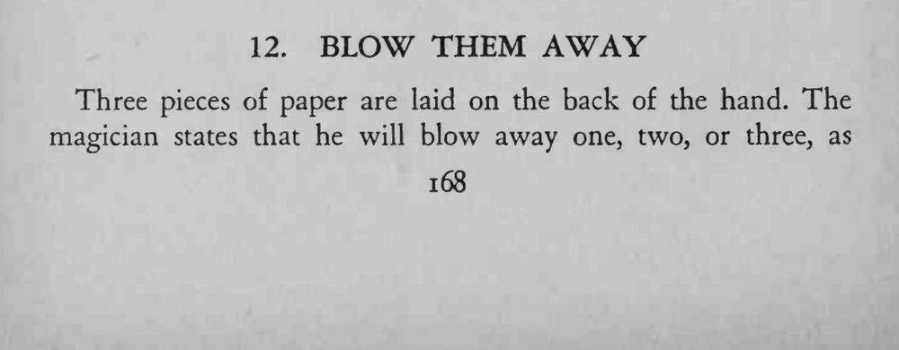
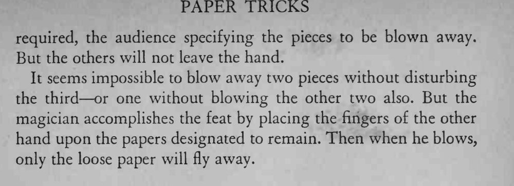

手背上放三张纸片，观众随便指定要吹走几张，魔术师一吹，飞走的正好是那几张。
按住纸片的手指动作要小，吹气要突然。


Three pieces of paper are laid on the back of the hand. The magician states that he will blow away one, two, or three, as required, the audience specifying the pieces to be blown away. But the others will not leave the hand. It seems impossible to blow away two pieces without disturbing the third or one without blowing the other two also. But the magician accomplishes the feat by placing the fingers of the other hand upon the papers designated to remain. Then when he blows, only the loose paper will fly away.